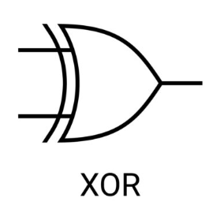

A kimenet csak akkor 1, ha a bemenetek közül csak az egyik 1. Úgy is meg lehet fogalmazni, hogy csak akkor igaz, ha a két bemenet különböző (ANTIVALENCIA).

| Bemenet A | Bemenet B | Kimenet | |-----------|-----------|---------| | 0 | 0 | 0 | | 0 | 1 | 1 | | 1 | 0 | 1 | | 1 | 1 | 0 |